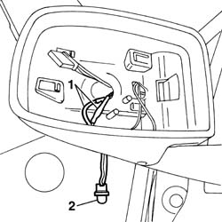

5010D12 outside air temperature sensor on door mirror - r+r following electrical circuit check
- Path
- Procedures > 50 AUXILIARY UNITS > 5010 CLIMATE CONTROL - MISCELLANEOUS > 5010D air temperature recording system > 5010D12 outside air temperature sensor on door mirror - r+r following electrical circuit check
- Kind
- repair procedure (removal / refitting; the operation number is the code)
- Applies to
- all engines; all production periods
- Interactive page
- https://sloeber94.github.io/elrnDB-fPnd/en/#/2752856
Applies to: all engines; all production periods
 Removing
Removing
 Refitting
RefittingDisconnect the battery negative terminal.
7005R35 door mirror reflector - r r
7005R36 door mirror motor - r r
1. Disconnect the electrical connections for the mirror. 2. Release and remove the temperature sensor.

Applies to: all engines; all production periods
Refitting
RemovingPlace the temperature sensor in position.
Connect the electrical connections for the mirror.
7005R36 door mirror motor - r r
7005R35 door mirror reflector - r r
Connect the battery negative terminal.